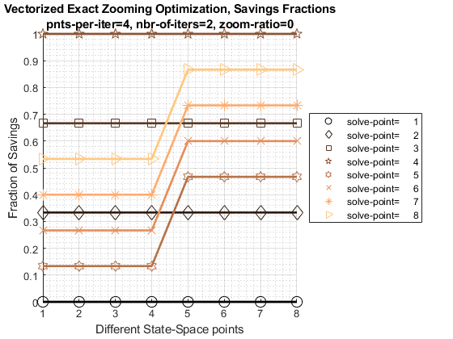
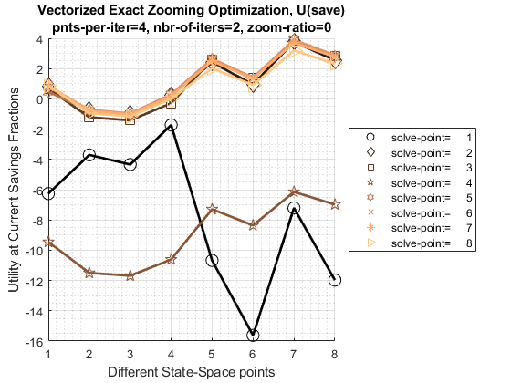

FF_OPTIM_MZOOM_SAVEZRONE Vectorized Zooming Savings Optimization
Vectorized zooming-in algorithm given anonymous function that outputs the utility given choices (not FOC). The function assumes that the lower and upper bounds starting points are the same for each row of the input parameter matrix. Savings problem where agents save 0 to 100 percent of available resoures (including borrowing bounds in resource). The example optimization called by default uses a two period borrowing and savings problem.
Suppose one would normally choose to use 50 grid points for asset states and choices for savings in a dynamic savings/borrowing problem. But perhaps the model requires higher solution accuracy. We want to approximately solve for the exact optimal choices. However, the model has discreteness, or frictions that lead to us not been able to rely on First Order Conditions. So we want to evaluate the utility function at choices directly and compare utility and find the max. The zooming in algorithm just means evaluate initially at 50 choice points, then zoom in to the area around the optimal choice, and set 50 choice points again. With several iterations, high choice precision can be achieved. Like any discretized grid based method, this method does not garantee finding the exact optimal choice if grid points are limited.
* FC_DERI_WTH_UNIROOT anonymous function handle, given an array of asset choice fractions, and state-space attributes, compute the utility at current choices. * MP_MZOOM_CTRLINFO map with number of iterations and number of points to solve for at each iteration. if it_mzoom_jnt_pnts = 10, it_mzoom_max_iter = 4, this means there will be four iterations, and at each iteration, 10 zoomed in additional points will be evaluated at. Additionally, will zoom-in 50 percent of the difference between the current round's max points closest bounds and last iteration's bounds. If it_mzoom_max_iter=0, will use the current round's closest new bound points. If it_mzoom_max_iter=1, zooming has no effects. What is the total precision? Set it_mzoom_max_iter=0, in terms of accuracy for percentage asset choices, given four iterations, and 10 points per iteration: (fl_x_right_start-fl_x_left_start)/(10*11*12*14), given that the bound is approximately 1, the precision is 0.00005827505. 10*11*12*13 = 17160.
mp_mlsec_ctrlinfo = containers.Map('KeyType','char', 'ValueType','any');
% within each multisection iteration, points to solve at
mp_mlsec_ctrlinfo('it_mzoom_jnt_pnts') = 10;
% number of iterations
mp_mlsec_ctrlinfo('it_mzoom_max_iter') = 4;
% zoom ratio
mp_mlsec_ctrlinfo('it_mzoom_zm_ratio') = 0.5;
% starting savings share, common for all
mp_mlsec_ctrlinfo('fl_x_left_start') = 10e-6;
% max savings share, common for all
mp_mlsec_ctrlinfo('fl_x_right_start') = 1-10e-6;[AR_OPTI_SAVE_FRAC] = FF_OPTIM_MZOOM_SAVEZRONE() default optimal saving and borrowing fractions.
[AR_OPTI_SAVE_FRAC] = FF_OPTIM_MZOOM_SAVEZRONE(FC_DERI_WTH_UNIROOT, BL_VERBOSE, BL_TIMER, MP_MZOOM_CTRLINFO) decide if to print verbose, verbose print will generate graphical and tabular outputs, control timer, and change iteration controsl via MP_MLSEC_CTRLINFO.
[AR_OPTI_SAVE_FRAC, AR_OPTI_SAVE_LEVEL] = FF_OPTIM_MZOOM_SAVEZRONE(FC_DERI_WTH_UNIROOT) given function handle for savings borrowing function derivative with an array of outputs, each representing a different set of state-space points, solve for optimal savings levels and savings fractions.
[AR_OPTI_SAVE_FRAC, AR_OPTI_SAVE_LEVEL, AR_OPTI_U_OBJ] = FF_OPTIM_MZOOM_SAVEZRONE(FC_DERI_WTH_UNIROOT) also output FOC objective.
[AR_OPTI_SAVE_FRAC, AR_OPTI_SAVE_LEVEL, AR_OPTI_U_OBJ, TB_X_INFO, TB_FX_INFO] = FF_OPTIM_MZOOM_SAVEZRONE(FC_DERI_WTH_UNIROOT, true) also output convergence iteration information, for all savings fraction points x, and utility at savings fractions fx.
see also FX_OPTIM_MZOOM_SAVEZRONE, FF_OPTIM_BISEC_SAVEZRONE, FF_OPTIM_MLSEC_SAVEZRONE
Contents
function varargout = ff_optim_mzoom_savezrone(varargin)
if (~isempty(varargin)) % NOT called interally with the testing function ffi_intertempora_max below bl_verbose = false; bl_timer = false; if (length(varargin) == 1) [fc_util] = varargin{:}; elseif (length(varargin) == 2) [fc_util, bl_verbose] = varargin{:}; elseif (length(varargin) == 3) [fc_util, bl_verbose, bl_timer] = varargin{:}; elseif (length(varargin) == 4) [fc_util, bl_verbose, bl_timer, mp_mlsec_ctrlinfo_ext] = varargin{:}; end else close all; % called interall with the testing function ffi_intertempora_max below bl_verbose = true; bl_timer = true; % 1. ffi_intertemporal_max at the end of this function is two period % intertemporal utility maximization problem where the choice is % savings or borrowing. The problem has natural bounds, 0 and 1, which % represent minimum and maximum percentage of resource saved or % borrowed. See: % https://fanwangecon.github.io/Math4Econ/derivative_application/htmlpdfm/K_save_households.html it_exam = 2; if(it_exam==1) % 2. Solve concurrently for combinations of z1, z2, r, and beta values ar_z1 = [1,1,2,2,3,3]'; ar_z2 = [3,3,2,2,1,1]'; ar_r = 1.10 + zeros(size(ar_z1)); ar_beta = [0.80, 0.95, 0.80, 0.95, 0.80, 0.95]'; % mt_fc_inputs = [ar_z1, ar_z2, ar_r, ar_beta]; elseif(it_exam==2) rng(123); it_draws = 8; % must be even number ar_z1 = exp(rand([it_draws,1])*3-1.5); ar_z2 = exp(rand([it_draws,1])*3-1.5); ar_r = (rand(it_draws,1)*10.0); ar_beta = [rand(round(it_draws/2),1)*1; rand(round(it_draws/2),1)*1+1]; elseif(it_exam==3) % run many check speed rng(123); it_draws = 6250000; % must be even number bl_verbose = false; bl_timer = false; ar_z1 = exp(rand([it_draws,1])*3-1.5); ar_z2 = exp(rand([it_draws,1])*3-1.5); ar_r = (rand(it_draws,1)*10.0); ar_beta = [rand(round(it_draws/2),1)*1; rand(round(it_draws/2),1)*1+1]; elseif(it_exam==4) [ar_z1, ar_z2, ar_r, ar_beta] = deal(0.4730, 0.6252, 0.0839, 0.7365); end % 3. define function with the fixed matrix of input fc_max_obj_singlepeak = @(x) ffi_intertemporal_util(x, ar_z1, ar_z2, ar_r, ar_beta); end
Set and Update Support Map
mp_mlsec_ctrlinfo = containers.Map('KeyType','char', 'ValueType','any'); % within each multisection iteration, points to solve at mp_mlsec_ctrlinfo('it_mzoom_jnt_pnts') = 4; % number of iterations mp_mlsec_ctrlinfo('it_mzoom_max_iter') = 2; % zoom ratio mp_mlsec_ctrlinfo('it_mzoom_zm_ratio') = 0; % starting savings share, common for all mp_mlsec_ctrlinfo('fl_x_left_start') = 10e-6; % max savings share, common for all mp_mlsec_ctrlinfo('fl_x_right_start') = 1-10e-6; % override default support_map values if (length(varargin)>=4) mp_mlsec_ctrlinfo = [mp_mlsec_ctrlinfo; mp_mlsec_ctrlinfo_ext]; end
Parse mp_grid_control
params_group = values(mp_mlsec_ctrlinfo, ... {'it_mzoom_jnt_pnts', 'it_mzoom_max_iter', 'it_mzoom_zm_ratio'}); [it_mzoom_jnt_pnts, it_mzoom_max_iter, it_mzoom_zm_ratio] = params_group{:}; params_group = values(mp_mlsec_ctrlinfo, {'fl_x_left_start', 'fl_x_right_start'}); [fl_x_left_start, fl_x_right_start] = params_group{:};
Timer Start
if (bl_timer) tic; end
Get output dimension and initial lower and upper points
[ar_lower_fx, ~] = fc_max_obj_singlepeak(fl_x_left_start); it_rows = size(ar_lower_fx,1); it_cols = size(ar_lower_fx,2); ar_lower_x = fl_x_left_start + zeros(it_rows, 1); ar_upper_x = fl_x_right_start + zeros(it_rows, 1);
Iterate and Evaluate
% current lower and upper arrays ar_lower_x_cur = ar_lower_x; ar_upper_x_cur = ar_upper_x; for it_multi_section_iter=1:it_mzoom_max_iter % current savings percentages: if (it_multi_section_iter == 1) it_mzoom_jnt_seg = it_mzoom_jnt_pnts - 1; ar_it_incre = (0:it_mzoom_jnt_seg); else it_mzoom_jnt_seg = it_mzoom_jnt_pnts + 1; ar_it_incre = (1:(it_mzoom_jnt_seg-1)); end mt_fl_x = ar_lower_x_cur + ((ar_upper_x_cur-ar_lower_x_cur)./(it_mzoom_jnt_seg))*ar_it_incre; % evaluate utility at new points: [mt_fx, mt_saveborr_level] = fc_max_obj_singlepeak(mt_fl_x); % keep track of iteration points if(bl_verbose) % core info tb_x = array2table(mt_fl_x'); tb_fx = array2table(mt_fx'); cl_row_names_a = strcat('point=', string((1:size(tb_x,1)))); cl_row_names_a = string(cl_row_names_a'); tb_x = addvars(tb_x, cl_row_names_a, 'Before', 1); tb_fx = addvars(tb_fx, cl_row_names_a, 'Before', 1); % Parameter Information Table that Shares Row Names as Simu Results mt_param_info = zeros([size(tb_x,1),1]) + it_multi_section_iter; tb_param_info = array2table(mt_param_info); tb_param_info.Properties.VariableNames = {'iter'}; % Combine Parameter Information and Simulation Contents tb_x_info_new = [tb_param_info, tb_x]; tb_fx_info_new = [tb_param_info, tb_fx]; % Stack up if (it_multi_section_iter == 1) tb_x_info = [tb_x_info_new]; tb_fx_info = [tb_fx_info_new]; else tb_x_info = [tb_x_info; tb_x_info_new]; tb_fx_info = [tb_fx_info; tb_fx_info_new]; end end if (it_multi_section_iter ~= 1) % append last bounds mt_fl_x = [ar_lower_x_cur, mt_fl_x, ar_upper_x_cur]; % mt_fx = [ar_lower_fx_bd', mt_fx, ar_upper_fx_bd']; else % keep initial ar_lower_fx_init = mt_fx(:,1); ar_upper_fx_init = mt_fx(:,end); end % Identify max point [ar_max_util, ar_max_idx] = max(mt_fx,[],2); % Lower and Higher State-Specific Choice Column Index ar_lower_bd = mt_fl_x(sub2ind(size(mt_fl_x), ... [1:it_rows], max(ar_max_idx-1, 1)')); ar_upper_bd = mt_fl_x(sub2ind(size(mt_fl_x), ... [1:it_rows], min(ar_max_idx+1, it_mzoom_jnt_pnts)')); % Update Choice Bounds with bound zoom ratio ar_lower_x_cur = ar_lower_bd' - (ar_lower_bd' - ar_lower_x_cur).*it_mzoom_zm_ratio; ar_upper_x_cur = ar_upper_bd' - (ar_upper_bd' - ar_upper_x_cur).*it_mzoom_zm_ratio; end ar_opti_save_frac = (ar_upper_bd+ar_lower_bd)/2;
Get Levels
if (nargout>=2)
[ar_opti_u_obj, ar_opti_save_level] = fc_max_obj_singlepeak(ar_opti_save_frac');
% end
Show iteration points
if(bl_verbose) % Graph x-points disp(tb_x_info); % prepare for graph mt_mlsec_info = (tb_x_info{:, [1,3:end]}); mt_mlsec_fracs = mt_mlsec_info(:,2:end); mp_support_graph = containers.Map('KeyType', 'char', 'ValueType', 'any'); mp_support_graph('cl_st_graph_title') = ... {['Vectorized Exact Zooming Optimization, Savings Fractions'], ... ['pnts-per-iter=' num2str(it_mzoom_jnt_pnts) ... ', nbr-of-iters=' num2str(it_mzoom_max_iter) ... ', zoom-ratio=' num2str(it_mzoom_zm_ratio)]}; mp_support_graph('cl_st_ytitle') = {'Fraction of Savings'}; mp_support_graph('cl_st_xtitle') = {'Different State-Space points'}; mp_support_graph('st_legend_loc') = 'eastoutside'; mp_support_graph('bl_graph_logy') = false; % do not log mp_support_graph('st_rowvar_name') = 'solve-point='; mp_support_graph('it_legend_select') = 15; % how many shock legends to show mp_support_graph('st_rounding') = '6.0f'; % format shock legend mp_support_graph('cl_colors') = 'copper'; % format color spectrum % Call function ff_graph_grid(mt_mlsec_fracs, 1:size(mt_mlsec_fracs,1), 1:it_rows, mp_support_graph); % Graph fx values, utility objecties disp(tb_fx_info); % prepare for graph mt_mlsec_info = (tb_fx_info{:, [1,3:end]}); mt_mlsec_fracs = mt_mlsec_info(:,2:end); mp_support_graph = containers.Map('KeyType', 'char', 'ValueType', 'any'); mp_support_graph('cl_st_graph_title') = ... {['Vectorized Exact Zooming Optimization, U(save)'], ... ['pnts-per-iter=' num2str(it_mzoom_jnt_pnts) ... ', nbr-of-iters=' num2str(it_mzoom_max_iter) ... ', zoom-ratio=' num2str(it_mzoom_zm_ratio)]}; mp_support_graph('cl_st_ytitle') = {'Utility at Current Savings Fractions'}; mp_support_graph('cl_st_xtitle') = {'Different State-Space points'}; mp_support_graph('st_legend_loc') = 'eastoutside'; mp_support_graph('bl_graph_logy') = false; % do not log mp_support_graph('st_rowvar_name') = 'solve-point='; mp_support_graph('it_legend_select') = 15; % how many shock legends to show mp_support_graph('st_rounding') = '6.0f'; % format shock legend mp_support_graph('cl_colors') = 'copper'; % format color spectrum % Call function ff_graph_grid(mt_mlsec_fracs, 1:size(mt_mlsec_fracs,1), 1:it_rows, mp_support_graph); end
iter cl_row_names_a Var1 Var2 Var3 Var4 Var5 Var6 Var7 Var8
____ ______________ _______ _______ _______ _______ _______ _______ _______ _______
1 "point=1" 1e-05 1e-05 1e-05 1e-05 1e-05 1e-05 1e-05 1e-05
1 "point=2" 0.33334 0.33334 0.33334 0.33334 0.33334 0.33334 0.33334 0.33334
1 "point=3" 0.66666 0.66666 0.66666 0.66666 0.66666 0.66666 0.66666 0.66666
1 "point=4" 0.99999 0.99999 0.99999 0.99999 0.99999 0.99999 0.99999 0.99999
2 "point=1" 0.13334 0.13334 0.13334 0.13334 0.46667 0.46667 0.46667 0.46667
2 "point=2" 0.26667 0.26667 0.26667 0.26667 0.6 0.6 0.6 0.6
2 "point=3" 0.4 0.4 0.4 0.4 0.73333 0.73333 0.73333 0.73333
2 "point=4" 0.53333 0.53333 0.53333 0.53333 0.86666 0.86666 0.86666 0.86666
 iter cl_row_names_a Var1 Var2 Var3 Var4 Var5 Var6 Var7 Var8
____ ______________ _______ ________ ________ __________ _______ _______ _______ _______
1 "point=1" -6.259 -3.7043 -4.3386 -1.7248 -10.674 -15.622 -7.2083 -11.973
1 "point=2" 0.85931 -0.74636 -0.97629 0.24697 2.3936 0.95818 3.7597 2.5528
1 "point=3" 0.66693 -1.2156 -1.4187 -0.28794 2.5972 1.3955 3.8236 2.8534
1 "point=4" -9.4545 -11.499 -11.686 -10.61 -7.2925 -8.3575 -6.1479 -6.9796
2 "point=1" 0.45973 -0.77991 -1.0454 0.30019 2.6058 1.2838 3.9041 2.812
2 "point=2" 0.79341 -0.72312 -0.96171 0.29135 2.6432 1.406 3.8908 2.8847
2 "point=3" 0.88566 -0.79284 -1.0157 0.18323 2.4974 1.3278 3.7045 2.7669
2 "point=4" 0.84218 -0.95124 -1.1629 -0.0024134 2.0204 0.90719 3.1939 2.3133
 Timer End
if (bl_timer) toc; end
Elapsed time is 2.420501 seconds.
print details
if (bl_verbose) mp_container_map = containers.Map('KeyType','char', 'ValueType','any'); mp_container_map('ar_opti_save_frac') = ar_opti_save_frac'; mp_container_map('ar_opti_foc_obj') = ar_opti_u_obj'; if (nargout>=2) mp_container_map('ar_opti_save_level') = ar_opti_save_level'; end ff_container_map_display(mp_container_map, 10, 10); end
----------------------------------------
xxxxxxxxxxxxxxxxxxxxxxxxxxxxxxxxxxxxxxxx
CONTAINER NAME: mp_container_map ND Array (Matrix etc)
xxxxxxxxxxxxxxxxxxxxxxxxxxxxxxxxxxxxxxxx
i idx ndim numel rowN colN sum mean std coefvari min max
_ ___ ____ _____ ____ ____ ______ ______ ______ ________ ________ _______
ar_opti_foc_obj 1 1 2 8 1 8 9.7393 1.2174 1.7613 1.4468 -1.0454 3.8535
ar_opti_save_frac 2 2 2 8 8 1 2.4 0.3 0.1709 0.56964 0.066675 0.46667
xxx TABLE:ar_opti_foc_obj xxxxxxxxxxxxxxxxxx
c1 c2 c3 c4 c5 c6 c7 c8
_______ ________ _______ _______ ______ ______ ______ _____
r1 0.79341 -0.77991 -1.0454 0.21609 2.6058 1.2838 3.8535 2.812
xxx TABLE:ar_opti_save_frac xxxxxxxxxxxxxxxxxx
c1
________
r1 0.26667
r2 0.13334
r3 0.13334
r4 0.066675
r5 0.46667
r6 0.46667
r7 0.4
r8 0.46667
Return
varargout = cell(nargout,0); for it_k = 1:nargout if (it_k==1) ob_out_cur = reshape(ar_opti_save_frac, [], 1); elseif (it_k==2) ob_out_cur = reshape(ar_opti_save_level, [], 1); elseif (it_k==3) ob_out_cur = reshape(ar_opti_u_obj, [], 1); elseif (it_k==4 && bl_verbose) ob_out_cur = tb_x_info; elseif (it_k==5 && bl_verbose) ob_out_cur = tb_fx_info; end varargout{it_k} = ob_out_cur; end
end
Intertemporal Utility
see https://fanwangecon.github.io/Math4Econ/derivative_application/htmlpdfm/K_save_households.html
function [ar_util, ar_saveborr_level] = ... ffi_intertemporal_util(ar_saveborr_frac, z1, z2, r, beta) ar_saveborr_level = ar_saveborr_frac.*(z1+z2./(1+r)) - z2./(1+r); ar_util = log(z1 - ar_saveborr_level) + beta.*log(ar_saveborr_level.*(1+r) + z2); end